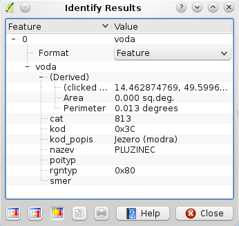
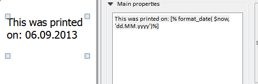
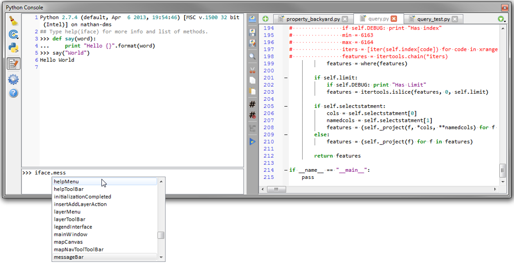
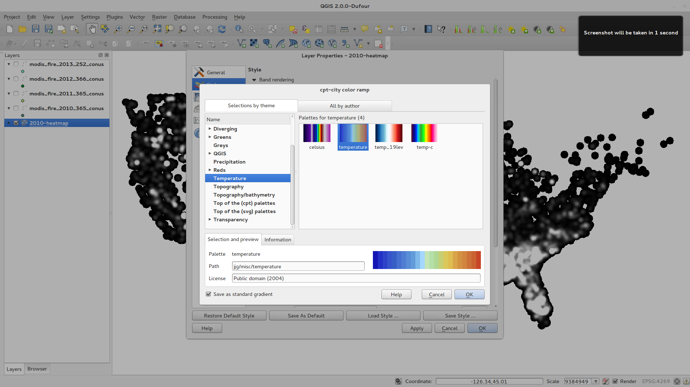
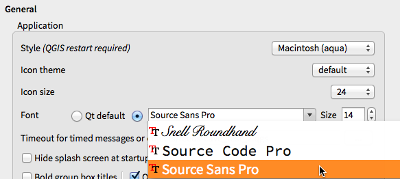

QGIS 2.0 pakeitimai¶
- Analizės įrankiai
- Programos ir projekto parinktys
- Naršyklė
- Duomenų tiekėjai
- Bendra
- Žymėjimas
- Sluoksnio legenda
- Žemėlapio kūrėjas
- Savybė: HTML žemėlapio elementai
- Savybė: kelių puslapių palaikymas
- Savybė: išraiškos kūrėjo žymose
- Savybė: automatinis pritraukimas prie linijų
- Savybė: rankinio lygiavimo linijos
- Savybė: žemėlapių serijos generavimas
- Savybė: automatinis peržiūros palaikymas žemėlapio rėme
- Savybė: sluoksnių suliejimas
- Savybė: HTML etikečių palaikymas
- Savybė: kelių stulpelių kūrėjo sutartiniai ženklai
- Savybė: žemėlapio kūrėjo valdymo atnaujinimai
- Priedai
- Programavimas
- Simbologija
- Savybė: nuo duomenų priklausančios savybės
- Savybė: pagerintas simbolių sluoksnio valdymas
- Savybė: permatomumo palaikymas spalvų apibrėžimuose
- Savybė: rastro sluoksnių spalvų kontrolė
- Savybė: kopijuoti vieno sluoksnio simbologiją į kitą sluoksnį
- Savybė: įrašyti stilių į jūsų duomenų bazę
- Savybė: spalvų rampos palaikymas
- Savybė: nustatykite savus numatytuosius stilius visiems sluoksnių tipams
- Naudotojo sąsaja
Analizės įrankiai¶
Savybė: Apdorojimo vadovas¶
Greitam priėjimui prie geoapdorojimo funkcionalumo, tiesiog paleiskite apdorojimo vadovą (Ctrl + Alt + M) ir pradėkite rašyti jūsų ieškomo įrankio pavadinimą. Vadovas rodys visas galimas parinktis ir galės jas paleisti. Daugiau nereikia ieškoti meniu, norint rasti įrankius. Dabar jie visai šalia.

Savybė: intensyvumo žemėlapio priedo patobulinimai¶
Intensyvumo žemėlapio priedas buvo stipriai patobulintas ir optimizuotas, dėl ko intensyvumo žemėlapiai kuriami greičiau. Papildomai dabar galite parinkti, kuri bazinė funkcija naudojama kuriant intensyvumo žemėlapį.

Savybė: apdorojimo palaikymas¶
SEXTANTE projektas buvo inkorporuotas į QGIS kaip bazinis funkcionalumas. SEXTANTE buvo pervadintas į „Apdorojimas“. Atsirado naujas QGIS meniu, kuriame rasite daug erdvinės analizės įrankių. Apdorojimo įrankinė turi labai daug funkcijų - su python’o programavimo API ji leidžia jums lengvai pridėti naujus įrankius ir jungtis, leidžiančias naudoti daugelio atviro kodo įrankių, tokių kaip GRASS, OTB, SAGA ir pan., analitines galimybes.

Savybė: apdorojimo modeliuotojas¶
Viena iš puikių naujo apdorojimo karkaso savybių yra galimybė kombinuoti įrankius grafiškai. Naudodami Apdorojimo modeliuotoją jūs galite sukurti sudėtingą analizę iš eilės kelių mažų vienos užduoties modulių. Jūs galite įrašyti šiuos modelius ir tada naudoti juos kaip komponentus dar sudėtingesniuose modeliuose. Nepakartojama jėga integruota tiesiai į QGIS ir ją labai paprasta naudoti!

Programos ir projekto parinktys¶
Savybė: numatyto pradinio projekto ir projekto šablono nustatymas¶
QGIS 2.0 galite nurodyti, ką QGIS turi daryti po paleidimo: „Naujas projektas“ (ankstesnė elgsena, pradedama su tuščiu projektu), „Paskutinis“ (paleidus QGIS bus įkeltas paskutinis jūsų naudotas projektas), „Konkretus“ (paleidus QGIS visada įkelti konkretų projektą). Galite naudoti projekto šablono aplanką, kuris nurodytų, kur reikia saugoti projektus. Šiame aplanke įrašytas projektas bus prieinamas kaip šablonas meniu punkte „Projektas->Naujas pagal šabloną“.

Savybė: sistemos aplinkos kintamieji¶
Dabartinės sistemos aplinkos kintamieji nuo šiol gali būti peržiūrėti, o dauguma ir konfigūruojami, parinkčių dialoge. Tai naudinga platformose, tokiose kaip Mac, kur GUI programos nebūtinai paveldi naudotojo aplinką. Taipogi patogu keičiant aplinkos kintamuosius, kuriuos naudoja išoriniai įrankiai, tokie kaip SAGA, GRASS bei įjungiant tinkinimo išvestį konkrečioms išeities kodo dalims.

Savybė: naudotojo nurodyti masteliai¶
Rodomus mastelius dabar galima konfigūruoti programai ir vėliau pakeiti konkrečiam projektui. Sąrašas bus rodomas „Mastelio“ iššokančiame sąraše pagrindinio lango būsenos juostoje. Taip bus galima greitai parinkti žinomus mastelius efektyviai peržiūrint ir dirbant su duomenų šaltiniais. Apibrėžti masteliai gali būti eksportuojami į XML failą, kuris gali būti importuojamas į kitus projektus ar į kitas QGIS programas.

Naršyklė¶
Savybė: aplikacijos vidinės naršyklės skydelio patobulinimai¶
- Aplankus galima filtruoti šablonu arba reguliariomis išraiškomis
- Nauji „Projektų namai“ (dabartinio projekto tėvinis aplankas)
- Dialoge pažymėto aplanko „Savybių“ peržiūra
- Parinkite, kuriuos aplankus „Greitai skenuoti“
- Failų sistemos naršymo dialoge pasirinkite „Pridėti aplanką“ tiesiai į „Mėgstamiausius“
- Naujas aplankas „/Volumes“ Mac’e (paslėptas aplankas priėjimui prie išorinių įrenginių)
- Nauja „OWS“ grupė (prieinamų žemėlapio serverio jungčių rinkinys)
- Atverkite antrą naršyklę („Nustatymai->Skydeliai->Naršyklė (2)“), kad galėtumėte vykdyti tampymo veiksmus tarp skydelių.
- Piktogramos nuo šiol rikiuojamos pagal elementų grupių tipus (failų sistemos, duombazės, žemėlapių serveriai)
- Sluoksnio „Savybės“ nuo šiol vizualiai geriau išdėstytos

Duomenų tiekėjai¶
Savybė: rastro duomenų tiekėjo pertvarkymas¶
Rastro duomenų tiekėjo sistema buvo pilnai perdaryta. Viena geriausių naujų savybių, atsiradusių po šio pertvarkymo, yra galimybė bet kuriam rastro sluoksniui daryti „Sluoksnis->Įrašyti kaip…“ ir taip įrašyti naują sluoksnį. Šio proceso metu jūs galite apkarpyti, keisti projekciją į naują koordinačių atskaitos sistemą. Taipogi galite įrašyti rastro sluoksnį kaip nubraižytą piešinį, pavyzdžiui jei turite vienos juostos rastrą, kuriam jūs panaudojote spalvų paletę, galite įrašyti gautą sluoksnį į georeferencinį RGB sluoksnį.


Savybė: pridėtas tinklo padengimo paslaugos WCS tiekėjas¶
QGIS dabar be papildomų priedų palaiko tinklo padengimo paslaugų sluoksnius - WCS pridėjimo procesas panašus į WMS ar WFS sluoksnio pridėjimą.
Savybė: numatytas rastro 2% nukirpimas¶
Daug rastro nuotraukų produktų turi didelį skaičių išskirčių, dėl ko nuotraukos atrodo išplaukusios. QGIS 2.0 leidžia daug tiksliau valdyti rastrų paišymo elgseną, įskaitant ir numatytą 2% - 98% kumuliacinį nukirpimą, kai sprendžiama dėl nuotraukoje naudojamų spalvų. Ši nuotrauka rodo QGIS 1.8 (kairėje) ir QGIS 2.0 (dešinėje) tos pačios nuotraukos braižymą su numatytais nustatymais.

Savybė: WMS identifikavimo formatas¶
Dabar galima pasirinkti WMS sluoksnių identifikavimo rezultato formatą, jei stotis palaiko daugiau nei vieną žinomą formatą. Palaikomi formatai, tokie kaip HTML, geoobjekto (GML) ir paprasto teksto. Parinkus geoobjekto (GML) formatą, rezultatai bus tokioje pačioje formoje, kaip ir vektoriniai sluoksniai, geometrija gali būti pažymėta ir geoobjektas, įskaitant atributus, ir geometrija gali būti nukopijuota į iškarpinę ir įkelta į kitą sluoksnį.

Savybė: WMTS palaikymas¶
QGIS WMS klientas dabar palaiko ir WMTS (Web Mapping Tile Service), įskaitant ir duomenų poaibių, tokių kaip laiko pjūvių, parinkimą. Pridedant WMS sluoksnį iš suderinamos stoties, jūsų paprašys parinkti, kurį laiko pjūvį rodyti.

Bendra¶
Savybė: Quantum GIS nuo šiol žinomas tik kaip „QGIS“¶
„Quantum GIS“ pavadinime žodis „Quantum“ niekada neturėjo kažkokios konkrečios reikšmės, o tik sukeldavo nesusipratimų, nes projektas buvo vadinamas dviem vardais „Quantum GIS“ ir „QGIS“. Mes racionalizuojame projektą ir dalis šio projekto yra oficialus žodžio „Quantum“ pašalinimas - taigi nuo dabar mes žinom tik kaip „QGIS“ (visos raidės didžiosios). Atitinkamai bus atnaujintas visas kodas ir viešai prieinama medžiaga.

Žymėjimas¶
Savybė: nauja žymėjimo sistema¶
Žymėjimo sistema buvo pilnai perdaryta - dabar ji turi daug naujų savybių, tokių kaip šešėliai, greitkelių skydeliai, daug daugiau su duomenimis susijusių parinkčių ir eilė greičio patobulinimų. Mes po truputį atsisakome „senos“ žymėjimo sistemos, taigi nors jūs vis dar rasite tą funkcionalumą šioje laidoje, žinokite, kad jis dings ateities versijose.

Savybė: nuo išraiškų priklausančios žymų savybės¶
Žymų savybėms valdyti dabar galima naudoti pilną žymų ir taisyklių išraiškų jėgą. Beveik visas savybes galima apibrėžti naudojant išraišką arba lauko reikšmę, o tai leidžia geriau valdyti žymų išvaizdą. Išraiškos gali rodyti tiesiogiai į konkretų lauką (pavyzdžiui nustatyti šrifto dydį pagal lauko „šriftas“ reikšmę), bet gali būti naudojama ir sudėtingesnė logika.
Prijungiamų savybių pavyzdžiai:
- Šriftas
- Dydis
- Stilius
- Buferio dydis

Savybė: senas žymų mechanizmas išimamas¶
Seno žymų mechanizmo (naudoto QGIS <= 1.8) siūloma nebenaudoti, bet jis dar neišimtas. Taip padaryta tik tam, kad naudotojai galėtų migruoti dabartinius projektus iš seno į naują žymų mechanizmą.
QGIS 2.0 seną žymų mechanizmą galima naudoti taip:
- Naujuose projektuose arba senuose projektuose, kurie nenaudoja žymėjimo mechanizmo, sena žymėjimo kortelė išimta iš vektorinio sluoksnio savybių dialogo
- Senoji kortelė lieka aktyvi seniems projektams, jei kuris nors sluoksnis ją naudoja. Kortelė nedingsta ne įrašius projektą be sluoksnių, kurie naudojo seną žymėjimo mechanizmą.
Seną žymėjimo kortelę galima įjungti/išjungti einamajam projektui per Python’o konsolę tokiomis komandomis:
>>> QgsProject.instance().writeEntry('DeprecatedLabels', '/Enabled', True | False)
# or
>>> QgsProject.instance().removeEntry('DeprecatedLabels', '/')
PASTABA: labai tikėtina, kad senas žymėjimo mechanizmas bus pilnai pašalintas iki kitos stabilios QGIS versijos išleidimo. Prašome migruoti senus projektus.

Sluoksnio legenda¶
Savybė: legendos vizualiai pateikiama informacija ir parinktys¶
- Geoobjektų skaičius sluoksnyje, įskaitant pasidalinimą pagal simbolį
- Vektoriniai sluoksniai, esantys redagavimo režime, turintys nepatvirtintų (neįrašytų) pakeitimų, vaizduojami su raudonu pieštuku
- Aktyvus sluoksnis dabar pabrauktas, kad būtų matomas kelių sluoksnių pažymėjime arba kai nėra jokio pažymėjimo
- Paspaudus tuščioje vietoje be elementų, pažymėjimas panaikinamas
- „Dešinieji paspaudimai“ dabar interpretuojami kaip „kairieji paspaudimai“ prieš parodant kontekstinį meniu, taip leidžiant vieną paspaudimą vietoje dviejų
- Grupės ir sluoksniai gali pasirinktinai būti rodomos riebiu šriftu
- Rastro sluoksnio sugeneruotos peržiūros piktogramos gali būti išjungtos projektuose, kuriuose toks paišymas yra lėtas

Savybė: egzistuojančio žemėlapio sluoksnio kopijavimas¶
Kopijuokite parinktą vektorinį ar rastro sluoksnį žemėlapio legendoje. Tai panašu į to paties duomenų šaltinio importavimą kaip kitą sluoksnį ir stiliaus bei simbologijos atributų perkopijavimą.

Savybė: kelių sluoksnių redagavimo perjungimo komandos¶
Naudotojas dabar gali legendoje parinkti daugiau nei vieną sluoksnį ir jei kažkurie iš pažymėtų sluoksnių yra redagavimo režime - parinkti juos įrašyti, atstatyti arba nutraukti dabartinius nepatvirtintus pakeitimus. Taipogi galite nurodyti pritaikyti šiuos veiksmus visiems sluoksniams, nepriklausomai nuo pažymėjimo.

Žemėlapio kūrėjas¶
Savybė: kelių puslapių palaikymas¶
Viename kūrėjo lange dabar gali būti daugiau nei vienas puslapis.

Savybė: išraiškos kūrėjo žymose¶
Kūrėjo žymos elementas 1.8 versijoje buvo gan ribotas ir leisdavo naudoti tik vieną raktažodį - $CURRENT_DATE. 2.0 pridėtas pilnas išraiškų palaikymas.
Žymelė su išraiška, tokia kaip:
This was printed on: [% format_date( $now, 'dd.MM.yyyy')%]
bus įvertinta spausdinimo metu (ir rodymo metu), kad sugeneruotų:
This was printed on: 06.09.2013
Įjungus atlaso generavimą, dabar aktyvių geoobjektų atributų reikšmės bus prieinamos išraiškose, tai leidžia tokius dalykus kaip:
Asset ID [% "ID" %] and the Tree Type is [% "TreeType" %]

Savybė: automatinis pritraukimas prie linijų¶
Gražiai lygiuoti žemėlapio elementai būtini kuriant gražius spausdinamus žemėlapius. Automatinės lygiavimo linijos pridėtos tam, kad leistų kūrėjo objektus gražiai lygiuoti tiesiog pertempiant objektus arčiau vieną prie kito.

Savybė: rankinio lygiavimo linijos¶
Kartais jūs norite sulygiuoti kūrėjo objektus. Su naujomis rankinio lygiavimo linijomis jūs galite pridėti rankinių lygiavimo linijų, kurių pagalba galėsite lygiuoti objektus pagal savo poreikius. Tiesiog tempkite iš viršaus arba šono liniuotės, kad sukurtumėte naują lygiavimo liniją.

Savybė: žemėlapių serijos generavimas¶
Ar jums kada nors reikėjo sukurti žemėlapių seriją? Aišku reikėjo. Kūrėjas dabar leidžia be papildomų priedų kurti žemėlapių serijas naudojant atlaso savybę. Padengimo sluoksniai gali būti taškai, linijos, poligonai, o dabartinio geoobjekto atributų duomenys prieinami žymose dinamiškam reikšmių pakeitimui.

Savybė: automatinis peržiūros palaikymas žemėlapio rėme¶
Norite parodyti šiuo metu rodomą žemėlapio dalį mažesniame peržiūros lange? Dabar jau galite tai padaryti. Žemėlapio rėmas jau gali rodyti kito rėmo apimtis ir atsinaujinti po pajudinimo. Naudojant tai su atlaso generavimo savybe leidžia sukurti labai elegantišką žemėlapį. Peržiūros rėmo stilius naudoja tokį patį stilių kūrimo mechanizmą kaip ir normalus žemėlapio poligonas, taigi jūsų kūrybiškumas nebus ribojamas.

Savybė: sluoksnių suliejimas¶
Sluoksnių suliejimas leidžia kombinuoti sluoksnius naujais ir įdomiais būdais. Senose versijose jūs galėjote tik padaryti sluoksnį permatomu, o dabar galite pasirinkti iš daug pažangesnių parinkčių, tokių kaip „dauginti“, „tik tamsinti“ ir daug kitų.
Suliejimas gali būti naudojamas tiek paprastoje žemėlapio peržiūroje, tiek ir spausdinimo kūrėjuose. Norėdami gauti daugiau naudos iš foninių piešinių, pažiūrėkite šią trumpą pamokėlę apie suliejimo naudojimą spausdinimo kūrėjo įrankyje: „Vintage map design using QGIS“.

Savybė: HTML etikečių palaikymas¶
Žemėlapio kūrėjo etiketės elementui pridėtas HTML palaikymas, leidžiantis dar labiau valdyti jūsų sukurtus žemėlapius. HTML etiketės pilnai palaiko css stilius, html ir net javascript, jei jums to reikia.

Savybė: kelių stulpelių kūrėjo sutartiniai ženklai¶
Kūrėjo sutartiniai ženklai dabar palaiko kelis stulpelius. Vieno sluoksnio su daugeliu klasių dalinimas į kelis stulpelius nėra privalomas. Vieno simbolio sluoksniai pagal nutylėjimą pridedami kaip vienos eilutės elementai. Sluoksnio/grupės pavadinimui galima priskirti vieną iš trijų stilių: grupė, pogrupis ir paslėptas. Pavadinimo stiliai leidžia vizualiai grupuoti elementus. Pavyzdžiui vieno simbolio sluoksnį galima rodyti kaip vienos eilutės elementą arba su sluoksnio pavadinimu (taip kaip 1.8 versijoje), simboliai iš kelių kitų sluoksnių gali būti grupuojami į vieną grupę (paslepiant pavadinimus) ir pan. Prie etikečių galima pridėti ir geoobjektų skaičių.

Savybė: žemėlapio kūrėjo valdymo atnaujinimai¶
Žemėlapio kūrėjo valdymo patobulinimai:
- Kūrėjo pavadinimą dabar galima nurodyti kuriant, galima pasirinkti ir pradėti su kitais kūrėjų pavadinimais
- Galima kurti kūrėjų kopijas
- „Naujas pagal šabloną“ ir „Konkretus“ (kūrėjo valdyme) sukuria kūrėją pagal šabloną, esantį bet kur jūsų failų sistemoje
- Tėvinį projektą dabar galima įrašyti tiesiai iš kūrėjo darbo erdvės
- Visi kūrėjo valdymo veiksmai prieinami tiesiai iš kūrėjo darbo erdvės

Priedai¶
Savybė: perdarytas priedų valdymas¶
QGIS 1.x priedų valdymas buvo sudėtingas, nes buvo dvi naudotojų sąsajos - viena skirta jau įdiegtų priedų valdymui, o kita - naujų python’o priedų atsiuntimui iš vienos vienintelės repozitorijos. QGIS 2.0 pristatytas naujas, suvienytas priedų valdymas, kurio pagalba vienoje vietoje galima atsisiųsti, įjungti/išjungti ir bendrai valdyti jūsų priedus. Ir beje, naudotojo sąsaja žavinga su šoninėmis kortelėmis ir lengvai atpažįstamomis piktogramomis!

Programavimas¶
Savybė: nauja python’o konsolė¶
Nauja Python’o konsolė suteikia dar daugiau jėgos. Dabar jau yra autoužbaigimas, sintaksės ryškinimas, keičiami šriftų nustatymai. Krašto kodo redaktorius leidžia lengviau įvesti didesnius kodo blokus su galimybe atverti ir paleisti bet kokį Python’o failą QGIS sesijoje.

Savybė: dar daugiau išraiškų funkcijų¶
Kadangi išraiškų variklis vis daugiau naudojamas QGIS, leidžiant tokius dalykus kaip išraiškomis valdomos etiketės ir simboliai, vis daugiau funkcijų pridedama į išraiškų kūrėją ir visos jos matomos išraiškų kūrėjų. Lengvesniam naudojimui visos funkcijos turi išsamią pagalbą ir naudojimo patarimus.

Savybė: savos išraiškų funkcijos¶
Nesijaudinkite, jei išraiškų variklis nepalaiko jums reikiamos funkcijos. Naujas funkcijas galima pridėti per priedą, naudojant paprastą Python API.

Savybė: naujas švaresnis Python’o API¶
Python’o API buvo perdarytas, kad būtų švaresnis, su labiau „pitonišku“ programavimo jausmu. QGIS 2.0 API naudoja SIP V2, kuri pašalina nepatogią toString(), toInt() logiką, kurios anksčiau reikėjo dirbant su reikšmėmis. Tipai dabar konvertuojami į savus Python tipus, dėl ko API pasidarė daug malonesnis. Prieiga prie atributų dabar daroma pačiame geoobjekte naudojant paprastą paiešką pagal raktą, nebėra daugiau paieškų per indeksą ir atributų žemėlapių.
>>> feature['mycolumn'] = 10
>>> feature['mycolumn']
10
Taipogi pagerintas geoobjektų skaitymas iš sluoksnio, kas leis ateities versijose dirbti keliomis gijomis.
for feature in layer.getFeatures():
print feature['mycolumn']

Savybė: kodo suderinamumas su 1.x versijomis¶
As this is a major release, it is not completely API compatible with previous 1.x releases. In most cases porting your code should be fairly straightforward - you can use this guide to get started. Please use the developer mailing list if you need further help.

Savybė: Pythono projekto makro¶
Pythono modulis, įrašytas į projekto .qgs failą, gali būti įkeltas ir konkrečios funkcijos gali būti paleistos po šių projekto įvykių:
openProject()saveProject()closeProject()
Ar makro bus vykdomi galima konfigūruoti programos parinktyse.

Simbologija¶
Savybė: nuo duomenų priklausančios savybės¶
Naudojant naujas, nuo duomenų priklausančias savybes, galima valdyti simbolių tipą, dydį, spalvą, pasukimą ir daug kitų savybių per geoobjekto atributus.

Savybė: pagerintas simbolių sluoksnio valdymas¶
Nauja simbolių sluoksnio apžiūra naudoja švaresnį, medžio struktūros išdėstymą, kuris leidžia lengvesnę ir greitesnę prieigą prie simbolių sluoksnių.

Savybė: permatomumo palaikymas spalvų apibrėžimuose¶
Daugumoje vietų, kuriose jūs parenkate spalvas, QGIS dabar leidžia nurodyti alfa kanalą (kuris nurodo kiek permatoma turi būti spalva). Tai leidžia jums kurti puikiai atrodančius žemėlapius ir lengvai paslėpti duomenis, kurių naudotojai neturėtų matyti.

Savybė: rastro sluoksnių spalvų kontrolė¶
QGIS 2.0 leidžia valdyti, kaip konkrečiai turi atrodyti rastro sluoksniai. Dabar pilnai valdote rastro sluoksnių ryškumą, kontrastą ir prisotinimą. Yra netgi parinktys, leidžiančios rastrą rodyti nespalvotai ar nuspalvinus nurodyta spalva.

Savybė: kopijuoti vieno sluoksnio simbologiją į kitą sluoksnį¶
Dabar ypatingai paprasta vieno sluoksnio simbologiją nukopijuoti į kitą sluoksnį. Jei dirbate su keliais panašiais sluoksniais, galite tiesiog dešiniu pelės mygtuku spausti ant vieno sluoksnio, kontekstiniame meniu parinkti „Kopijuoti stilių“ ir kitame sluoksnyje parinkti „Įkelti stilių“.

Savybė: įrašyti stilių į jūsų duomenų bazę¶
Jei naudojate duomenų bazę vektorinių duomenų saugojimui, galite įrašyti sluoksnio stilių apibrėžimus tiesiai į duomenų bazę. Taip bus paprasčiau dalintis sluoksniais su stiliais didelių kompanijų ar kelių naudotojų aplinkose.

Savybė: spalvų rampos palaikymas¶
Nuo dabar spalvų rampas rasite daugumoje QGIS simbologijos nustatymų. QGIS turi gausią ir išplečiamą spalvų rampų aibę. Taipogi galite sukurti savo, o daug kitų jau sukurtų cpt-city temų iš karto įtrauktos į QGIS. Spalvų rampos netgi pilnai palaiko permatomumą!

Savybė: nustatykite savus numatytuosius stilius visiems sluoksnių tipams¶
Dabar QGIS leidžia valdyti, kaip bus paišomi nauji sluoksniai, net tada, jei jie neturi sukurto „.qml“ failo. Taipogi galite nurodyti numatytąjį naujų sluoksnių permatomumo lygį ir ar simboliams reikia priskirti atsitiktines spalvas.

Naudotojo sąsaja¶
Savybė: nauja piktogramų tema¶
Mes atnaujinome piktogramų temą. Dabar naudojama „GIS“ tema, kuri QGIS naudotojo sąsajai suteikia daugiau nuoseklumo ir profesionalizmo.

Savybė: šoninės kortelės, sutraukiamos grupės¶
Mes standartizavome kortelių išdėstymą ir įvedėme sutraukiamas grupes į daugumą mūsų dialogų, kad naršymas tarp skirtingų parinkčių būtų paprastesnis ir leistų geriau išnaudoti ekrano plotą.

Savybė: „minkšti“ pranešimai¶
Dažnai mes norime jums kažką pasakyti, bet nenorime stabdyti jūsų darbo arba jums trukdyti. Nauja QGIS pranešimų sistema leidžia jums pateikti svarbią informaciją per geltoną pranešimo juostą, kuri pasirodo žemėlapio drobės viršuje, bet neverčia jūsų ką nors su ja daryti, jei esate užsiėmę kuo nors kitu. Programuotojai taipogi gali sukurti tokius pranešimas (pvz. iš priedo) naudojant mūsų python’o API.

Savybė: programos savas šriftas ir Qt stiliai¶
Dabar galima pakeisti sisteminį šriftą, kuris naudojamas programoje. Bet kuris C++ ar Python’o priedas, kuris yra QGIS GUI programos vaikas arba turi nukopijuotą/pritaikytą programos GUI stilių gali paveldėti ir stilių, o tai naudinga GUI pataisymams įvairiose platformose ir naudojant savus QGIS Qt valdiklius, tokius kaip „QgsCollapsibleGroupBox“.
Sukurtas QGIS GUI programos stilius dabartinei platformai prieinamas po paleidimo (PyQGIS pagalba):
qgis.utils.iface.mainWindow().styleSheet()

Savybė: „gyvi“ spalvų parinkimo dialogai ir mygtukai¶
Visi sąsajos spalvų parinkimo mygtukai buvo atnaujinti: jie vizualiai rodo ar dabartinė spalva yra permatomumo arba „alfa“ komponentą. Naujos spalvos mygtuku atveriamas spalvos pasirinkimas dabar visada bus numatytasis operacinės sistemos. Jei naudotojas įjungė parinktį „Naudoti gyvai atsinaujinančius spalvų pasirinkimo dialogus“, kurią galima rasti „Parinktys->Bendra->Programa“, bet koks pakeitimas spalvos parinkime bus akimirksniu rodomas spalvos mygtuke ir bet kuriam šiuo metu keičiamam elementui, jei tokių yra.

Savybė: SVG anotacijos¶
QGIS 2.0 dabar jau galima į žemėlapį įdėti SVG anotacijas - arba prisegtas prie konkrečios vietos, arba nuo žemėlapio drobės priklausančioje vietoje.

Savybė: pertempkite iš kūrėjo¶
QGIS 2.0 turi naują puikią duomenų įrašų kūrimo formų sistemą. Pertempimu iš formų dizainerio jūs galite sukurti gudriai atrodančias formas su kortelėmis, grupuojančiomis bendrus laukus. Dabar daug paprasčiau valdyti jūsų naudotojų duomenų įvedimą.

Savybė: numatyto veiksmo įrankis¶
Jei naudojate vektorinio sluoksnio veiksmus (mažas užduotis, kurios gali būti vykdomos paspaudus ant geoobjekto), jums patiks naujas veiksmo mygtukas įrankinėje. Jo pagalba galite parinkti aktyvų veiksmą ir tada spausti ant geoobjektų, kad vykdytumėte parinktą veiksmą.